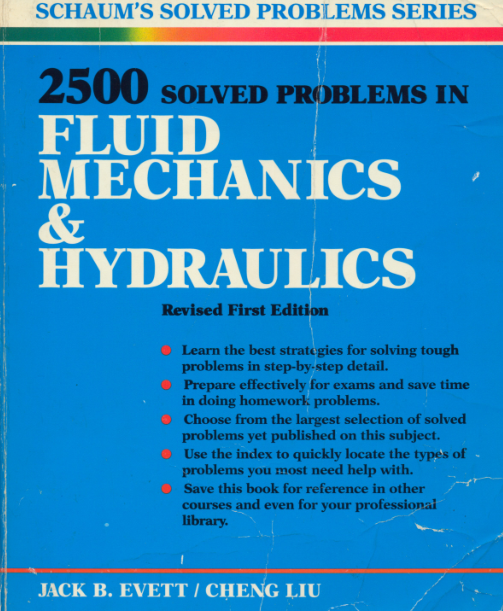
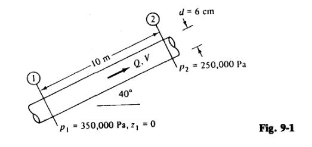

Fluid Mechanics with Python

Chapter 9
Exercise 9.1:
Water at 10°C flows in a 150-mm-diameter pipe at a velocity of 5.5 m/s. Is this flow laminar or turbulent?
>> Github
Exercise 9.6:
An oil with p = 900 kg/m' and v = 0.0002 m2/s flows upward through an inclined pipe as shown in Fig. 9-1. Assuming steady laminar flow, (a) verify that the flow is up and find the (b) head loss between section 1 and section 2, (c) flow rate, (d) velocity, and (e) Reynolds number. Is the flow really laminar?
